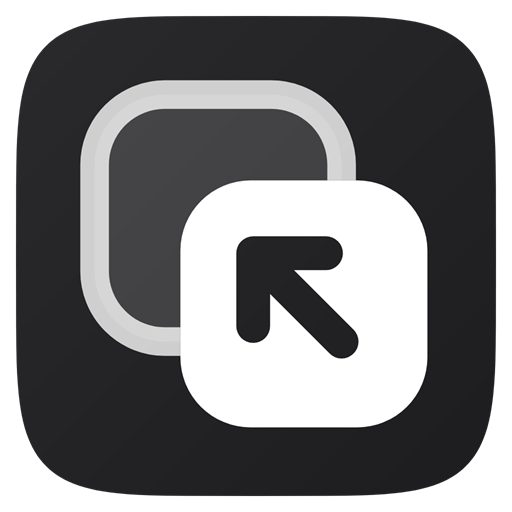

iPhone / iPad home screen (apple-touch-icon, iOS rounds the corners)
Android adaptive icon (maskable, every launcher shape)
Squircle
Rounded square
Teardrop

"any" (desktop)
Android themed icons (monochrome, the launcher picks the colours)
Browser tab (favicon)
Aligno
16 px png
32 px png at 16